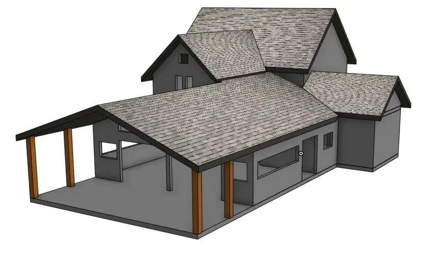

Construction

From a few key measurements and photos, I can create a 3D model of your house, space, or room, and together we can dynamically explore architectural concepts: What if this room were bigger? What if we add windows? Remove a wall? I can produce images and drawings to help you ensure that your contractor is making the changes you want, and they can be shared with your town or city to help with the permit approval process.
Beyond helping others with this, I routinely use these techniques from my own design exploration and remodeling projects.
Furniture

3D Models and 2D manufacturing-ready plans for furniture, jewelry or other items,that can be used to help a builder fabricate them, or to help you better understand what will work for your needs.
From my experience creating models and drawings for my own projects, I can ensure that the documentation we create is realistic and manufacturable.
Legal

Have a complex situation you need to illustrate? I can help you create easy to understand diagrams of complex situations; overlays of 3D objects on 2D images, or 3D scans of real spaces.
Read about how this is being used today.